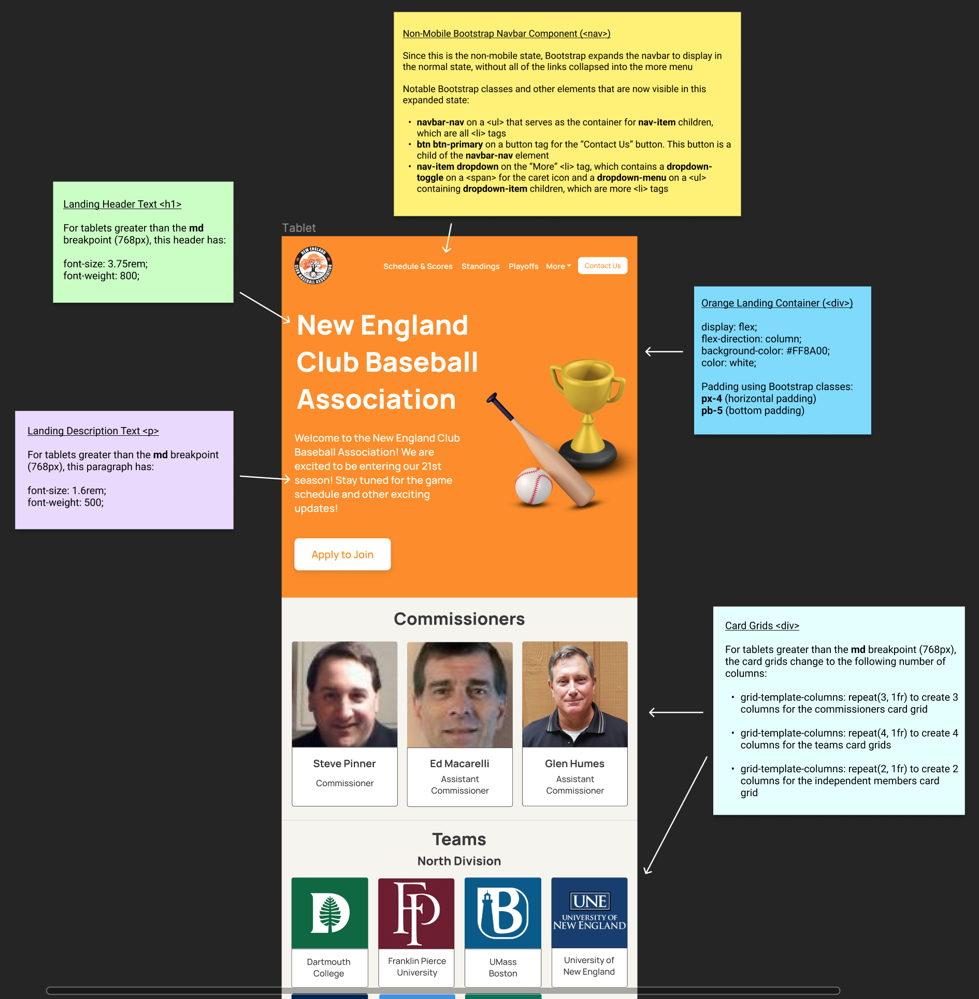

Website Selection
I chose this website (http://www.necba.com/) because I frequently have to use it to view Brown club baseball's schedule and standings in the league.
Usability Problems
To begin the redesign process, I wrote down some of my observations about the main usability problems the website has. I focused on the interface's learnability, memorability, and affordances to the user:
-
The site’s learnability and memorability suffers greatly from its lack of visual consistency:
- Looking at the team logo images, some have backgrounds behind them while others are cut-out PNGs. This muddles the mappings between these images and any potential functions they serve: e.g. are the team logos without backgrounds actually buttons, while the others aren’t?
- The positioning of image labels varies. The labels for the commissioner headshots are aligned with the baseline and positioned on the right side while the labels for the team logos are centered along the top side.
- The text for all of the main page links is capitalized in standard title case and bold font while the text for the “Application to Join” link is in all caps and not bolded.
- There is no affordance to signal to users that the blue and red email GIF is actually a link to the website’s “Contact Us Form”. Also, a low-quality animated element does not fit with a user’s mental model of what a link looks like.
- The layout of the page is not conducive to scanning and violates our natural left-to-right reading path. This is because it is somewhat broken down into three main columns of elements, but these columns bleed into each other and have no visual demarcations.
- There is a lack of responsiveness to changes in browser size and device type. Most of the page’s elements are absolutely positioned and don’t use any relative units for sizing and scaling. This greatly harms the usability by forcing mobile users and users with small browser widths to have to zoom in and scroll horizontally to see content.
- Colors don't have strong mappings to specific functions on this site. Besides most of the links being a standard blue color, orange is used sporadically around the page for some image labels, but not others, and individual occurrences of black, red, and green are used for plain text without a clear reason as to why they aren’t all a single color.
Accessibility
The next step of the process was to investigate the site's accessibility using the WebAIM WAVE tool.
Overall, I agreed with all of the WAVE tool’s findings. It found the following:
- 36 very low-contrast errors for most of the text on the page. This low-contrast is mostly a by-product of the gray background, which renders even medium blue colors such as the ones used for “Tufts University” and “University of Massachusetts Boston” quite difficult to read.
- 22 very small text errors for most of the text on the page. All of the team name labels are 10px, while the majority of other text is in the 12-14px range. This makes it challenging for the average user, let alone a visually impaired user, to read the text.
- 31 empty alternative text errors for almost all of the images on the screen. This poses obvious issues for users with screen readers who can’t see the images well and need them to be described out loud.
Lo-fi Wireframes
Moving on to the redesigning portion, I started by creating 3 lo-fi wireframes (mobile, tablet, and desktop) using Balsamiq to address the main usability problems.
Visual Design Guide
Before starting my hi-fi prototypes in Figma, I made a UI design guide showing my redesigned site's key interactive components, colors, and typography.
Hi-fi Prototypes
Using the UI design guide, I created 3 hi-fi prototypes (mobile, tablet, desktop) in Figma. I'm first showcasing all three prototypes side-by-side to illustrate the site's responsiveness, before zooming in on each of them. I've also included annotations of the key components and responsive behavior.
Overview
Mobile

Tablet
Desktop
Redesigned Website
Finally, I created the actual responsively redesigned website, which can be found at this link: https://hungrypanda140.github.io/cs1300-necba-redesign/
Citations: The redesigned website's 3D baseball bat, ball, and trophy icons are from the following Figma Community file. I used Bootstrap 5 for this website and the redesigned website.